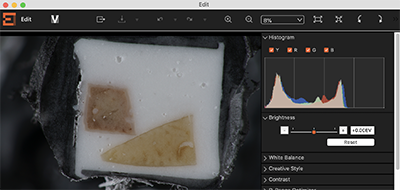
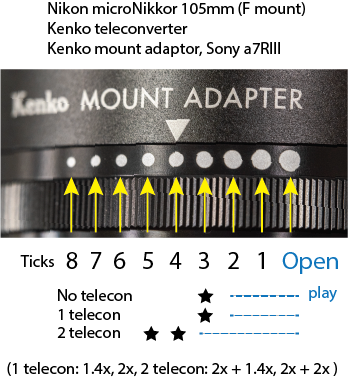
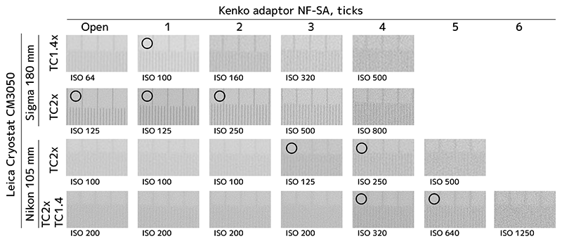

Camera Settings/カメラの設定
Many information is here in this section. Eventually, the camera should be set to take images without blurring, with noise acceptable, and to observe the structures you want to analyze. Image quality is important in the field of artistic photograpy, while in the research field, the highest priority is to "shoot under the same conditions between comparison groups, process images under the same conditions, and keep a record of your work to ensure reproducibility (RAW development setting files, Photoshop's Action and Droplet, ImageJ's macros, etc.)".
多くの情報を記載しています。結局は、カメラの設定は、「ぶれずに撮影でき、ノイズが許容範囲であればよし」「解析したい試料で、見たい構造物が見えればよし」です。画質が良いことに越したことはありませんが、研究での最優先は、「比較群間で同一条件で撮影すること、同一条件で画像処理すること、再現性を保証する作業記録を残すこと（RAWの現像設定ファイル、PhotoshopのActionやDroplet、ImageJのmacroなどを保管すること）」です。
Initial settings/初期設定
- In the menu of camera body, "Allow shutter release without lens". This allows the camera control by CoMBI via release cable.
- Select shutter mode as "Electronic front curtain", to excape shutter shock whick is a cause of blur.
- In the case of SLR camera (Nikon D810, 2014), select Mup mode, to escape mirror shock which is a cause of blur. Q or Qc mode can also be selected.日本写真学会誌2015,78(3)151-153.
- Select image size, Nikon:FX (Full-size), DX(APC-S), ratio (3:2, 5:4, 1:1), depending on sample size. Select small as possible to save disc space. Sony a7RIII: Full-size or APS-C.
- RAW image quality. Both gradation 12bit and 16bit is useful for research purpose. To save disc spase, use 12bit. Later, JPEG images are used for 3D reconstruction, which has only 8bit, thus 12 and 16 bit is enough to process. I prefer compressed RAW in Nikon D810 to save disc space.
- メニューで、「レンズなしシャッターを許可」CoMBIのリリースケーブルによる制御を許可するためです。
- シャッターのモードを「電子先膜シャッター」にします。シャッターショックというブレを防止する目的です。
- 一眼レフカメラ、Nikon D810(2014)では、ミラーショックというブレも防止したいです。Mupモード（ミラーアップ）を使います。または、Q, Qcモードを使います。日本写真学会誌2015,78(3)151-153.
- 画像の広さ。Nikonなら、FX（フルサイズ）、DX（APS-Cサイズ）、比率3:2, 5:4, 1:1などから選び、データ量を節約します。Sonyなら、フルサイズ、APS-Cサイズから選びます。
- RAW画像。階調数は、12bit, 16bit。どちらでもよく、データ量の節約には12bitです。のちに変換するJPEG形式では8bitしかないので、どちらでも豊かな階調数をもち、画像調整にも耐えられます。Nikonでは圧縮RAWを選んでいます。
Shutter speed/シャッター速度
- For rotary microtomes (including cryostats), consider a shutter speed (SS) of 1/125-1/250. This is a shorter SS because you will imaging a moving block, even if it moves slowly. If SS is too slow (1/60 sec), the vibration of the cooling compressor will cause blurring. This blurring is especially noticeable when shooting at 4x teleconverter. If the speed is too fast, the ISO sensitivity will be increased, resulting in increased noise. Conditions vary depending on the microtome model and lighting conditions. First, try taking dozens of shots at 1/125 as a test. If you find frequent blurring, then 1/250 is probably the best SS.
-
For sliding microtomes, consider a shutter speed of 1/30-1/250. The block is static, so SS can be slow. The sturdiness of the table will also have an effect, so please verify with each user to make sure there will be no blurring.
-
Motorized handle: (Currently, motorized operation is not recommended.)Failure to image blockface in the middle of a moving is passing by and blur when the sectioning window is set too severely. The Speed setting on the CM3050 is set to 25%.
- Manual handle: Set to image when the sample reaches the top. Failure is very rare, since the time spent at the top is quite long. When the handle is turned vigorously quick by hand, you will find a blur.
-
Magnified imaging using teleconverter: Manual operation is recommended because the block is almost static when reaches to the top end. I prefer to use SS at 1/125 and lower ISO (suppress noise). SS 1/250 is also better choice. 4x magnification & manual operation sometimes caused blurring at 1/125. However, the blurring was slight and not subversive. If you can concentrate on your operation (don't show off, don't doze off) and carefully rotare the handle, there seems to be no blurring. It is difficult to decide whether to slow down the shutter (blur) or increase the ISO (noise) because it gets darker when using a teleconverter.
-
回転式ミクロトームの場合（クリオスタットを含む）、シャッター速度は、1/125-1/250を検討してください。ゆっくりでも動いているブロックを撮影するので、短めにしてあります。遅すぎる（1/60）と冷却用コンプレッサの振動がブレになります。特に、テレコン4倍撮影時にブレが目立ちます。速すぎるとISO感度を上げることになり、ノイズが増えます。ミクロトームの機種や照明の状況よって条件が異なります。まず、試しに1/125で数十回撮影してみます。もし、頻繁にブレが出るようなら、1/250でしょう。
-
滑走式ミクロトームの場合、シャッター速度は、1/30-1/250を検討してください。ブロックは静止しているので遅くても大丈夫です。机の丈夫さも影響しますので、ブレが出ないか、各ユーザで検証してください
-
電動ハンドル設定 : （現在は、電動ハンドルの使用は推奨していません。2022年）動いている途中で撮影する設定での失敗は、設定ウィンドウをシビアにしすぎると、まれに通り過ぎてブレまうことです。ちなみにCM3050のSpeed設定は25%にしています。
- 手動ハンドル設定（試料が上端に来たときに撮影する設定）での失敗は、手回しで勢いよく過ぎてしまったときです。上端に滞在する時間は、けっこう長いので、めったには失敗しません。
- テレコンで拡大撮影する場合、手動のほうが撮影時にブロックは静止状態に近いので安心です。シャッター速度は、1/125か、1/250がいいでしょう。4倍拡大＆手動では、1/125でときどきブレました。ただし、ブレはわずかで没にはならない程度でした。作業に集中して（よそ見せず、居眠りせずに）、丁寧に手回しすればブレないようです。テレコンを使うと、暗くなるので、シャッターを遅くする（ブレ）か、ISOを上げる（ノイズ）か、判断は難しいですが、私は1/125で丁寧に回し、ISO（＝ノイズ）を抑制することを選びました。
Iris/絞り
The aperture of the lens is set as one stop down from open aperture by ring or 1/3 stop down in camera body setting. This is the only choice. The aperture affects the sharpness of the image and the depth of focus. We chose the sharpest and brighter apertures. Accoding to my testing of six macro lenses, all lens produce the sharpest image with 1/3 stop smaller aperture. With maximally opening aperture, depth of focus become shallow, but with careful adjustment of camera position and focusing, the entire block surface can be in focus. 1-stop F values are f/1.4, f/2, f/2.8, f/4, f/5.6, f/8, f/11, f/16, f/22, f/32. 1/3-stop F values are between these 1-stop values, and varies on each company and camera settings.
- Set apature in the camera body: Close down the aperture by only 1/3 stop from the maximum opening aperture. When using a teleconverter, the F value displayed by the camera may be converted to a larger number. Anyway, it is better to use a little closer than maxmum opening aperture. (Example: Canon 100 macro + Canon EOS）
- Set apature by the ring on the lens: Close down the aperture by 1/3 stop from the maximum aperture. (Example: Tamron 180mm macro F-mount + Nikon D810)
- Set apature by the ring on the mount converter: Since the ring may have some play, Please explore one stop down, the stops where it starts to get darker with the equipment used in each lab. In fact, when I tested with various combinations of lenses, telecontrollers, and adapters, one stop down varies from one to five stops. The play will increase in the following order; no teleconverter, one teleconverter, and two teleconverters. (Example 1: Nikon 105mm macro F-mount + Kenko mount adaptor Nikon F-Sony E + Sony a7RIII) (Example 2: Tamron 180 macro, NikonF-CanonEF adaptor, Canon EOS)
- In case of 2 rings on the lens and adaptor The ring on the lens is set at minimal (F32), and the ring on the adaptor is set at one stop down, the stops where it starts to get darker (Ex1: Tamron 180mm macro F-mount + Kenko mount adaptor Nikon F-Sony E + Sony a7RIII) (Ex2: Tamron 180 macro, NikonF-CanonEF adaptor, Canon EOS)
レンズの絞りは、リングで開放より一つ絞ったところ（もしくは、カメラ本体での1/3段絞ったことろ）を使っています。ほぼ一択です。絞りは、画像のシャープさと、焦点深度にかかわります。シャープで明るいところを選びました。6本のマクロレンズで検証したところ、1/3絞ったところが最もシャープでした。開放近くでは、焦点深度が浅くなりますが、カメラ位置の調整を慎重に行うことで、ブロック面全面にフォーカスを合わせられます。1段ごとのF値は、F1.4, F2, F2.8, F4, F5.6, F8, F11, F16, F22, F32。1/3段は、これらの間にあって、各社カメラや設定によって異なります。
- カメラ本体で行う場合 開放より1/3段だけ絞る。テレコン使用時では、カメラが表示するF値は変換されて、大きな値になることがあります。とにかく開放より、ちょっと絞るのが良いです。（例：Canon 100 macro + Canon EOS）
- レンズ本体の絞りリングで行う場合 開放より1/3段だけ絞る。（例：Tamron 180mm macro F-mount + Nikon D810）
- マウントアダプタの絞りリングで行う場合 リングに遊びがあるせいで、注意が必要です。1目盛り、2目盛り絞ったところでは、開放のままになることがあるからです。実際、レンズ、テレコン、アダプタの様々な組み合わせで試したところ、1つ絞ったところは、1〜5目盛りと変動します。各ラボの使用する機材で、「暗くなり始める目盛り」を探ってください。テレコンなし、テレコン1個、テレコン2個の順で、遊びは大きくなります。（例1：Nikon 105mm macro F-mount + Kenko mount adaptor Nikon F-Sony E + Sony a7RIII）（例2：Tamron 180 macro, NikonF-CanonEF adaptor, Canon EOS）
- マウントアダプタと絞りリング付きレンズの場合 操作に注意。レンズの絞りリングは最小（F32など）に寄せておき、アダプタの絞りリングを操作します。（例1：Tamron 180mm macro F-mount + Kenko mount adaptor Nikon F-Sony E + Sony a7RIII）（例2：Tamron 180 macro, NikonF-CanonEF adaptor, Canon EOS）
ISO sensitibity/ISO感度
ISO100-800 (Sony a7RIII, 2017 back-illuminated), ISO 64-400 (Nikon D810, 2014) are acceptable. Noise is not noticeable at these settings. Sensitivity varies on camera models. Shutter speed and aperture are almost fixed for CoMBI experiment, so the ISO is almost changable parameter. The imaging environment depends on LED lighting brightness and with or without teleconverter. Examples are shown in the table below.
ISO100-800（Sony a7RIII, 2017 裏面照射型）、ISO 64-400（Nikon D810, 2014） 機種によって感度性能が異なります。ノイズが目立たない設定にしています。シャッター速度と絞り（上記）が、CoMBIならではの事情により、ほぼ決まってしまうので、ISOを変えて、各自の撮影環境に合わせることになります。撮影環境は、LED照明の明るさとテレコンの有無で異なります。具体例を下表に記しました。
Histogram/ヒストグラム
Confirm that the image is NOT saturated. In the experiment, saturation is the term to describe too bright and too dark, and must be avoided. The histogram can be checked on the rear monitor of the camera. Set the display mode to histogram display. If you are connected to a computer, you can use an application (such as Sony Imaging Edge) to display the histogram. Since RAW has more gradation than 12bit, a signal spread over 25-75% of the histogram should be sufficient for later conversion to 8bit images.
飽和しないことを確認します。実験では、白とび、黒つぶれすることを、飽和（Saturated, Saturation）といって、避けたい状況です。ヒストグラムは、カメラ背面モニタで確認できます。表示モードをヒストグラム表示にしてください。もし、コンピュータと接続していれば、アプリ（Sony Imaging Edgeなど）でも表示できます。RAWは12bitより多い階調数がありますので、ヒストグラムの25-75%にシグナルが広がっていれば、のちに8bit画像へ変換するのに十分な情報量があるでしょう。
LED照明
On 2020 and later CoMBI controllers, the LEDs can be set to 12V high mode or 9V low mode; on 2019 and earlier models, the LEDs can be set to 12V by controller and 9V by plugging a 9V AC adapter directly into the LEDs. The default is 12V, and camera settings (Table, below) are verified with two 12V LEDs. If 9V is used, the exposure conditions should be about 2-stops (4-times) brighter than 12V. For example, ISO 50 should be increased to 200. 9V power is used when the light is too bright for 1x shooting or when you want to suppress melting of the black OCT.
2020年以降のCoMBIコントローラでは、LEDは、12V強、9V弱から選べます。2019年以前のモデルでは、LEDに直接9VのACアダプタをさせば、9V(弱）にできます。デフォルトは12Vで下表では12V2灯で検証しています。もし、9Vを使う場合は、12Vと比較して、2段分の明るい露出条件にしてください。例えば、ISO50なら200へ変更します。9Vを使う場面はあまりなく、1倍撮影では明るすぎるときや、黒OCTの融解を抑制したいときなどです。
Examples of setting/設定の例
The list of ISO settings with and without teleconverter (table below). To evaluate noise and blurring (due to compressor vibration), an objective micrometer was placed inside a cryostat (Leica CM3050) and a static micrometer was photographed. Illumination was 2 LEDs powered by 12V. Shutter speed was set at 1/125, which is short enough to avoid motion blur and long enough to ensure sufficient brightness (see above). If you use other lenses or other lighting settings, modify this table, for example, set 1/3 stop brighter for f/3.5 lenses, and set 2 stops brighter for 9V lighting. If you do not use a mount adapter, set the aperture in the table by the aperture ring on the lens or by the camera body. For cameras that are NOT back-illuminated, ISO 800 may result in more noise.
テレコンの有無によるISOの設定一覧（下表）です。クリオスタット（Leica CM3050）内に対物ミクロメータを置いて、静止したミクロメータを撮影してノイズやブレ（コンプレッサの振動による）の評価しました。照明はLED2灯12Vを使用しました。シャッター速度は1/125で、これは試料の動きによるブレがないような短い時間、かつ、十分な明るさを確保する時間にしています（上述）。他のレンズや他の照明設定を使う場合は、この表を改変してください：F3.5のレンズでは1/3段明るく、9V照明では2段明るくします。マウントアダプタ不要の場合は、表中の絞りではなく、カメラ本体かレンズの絞りリングで一目盛り=1/3段絞ってください。裏面照射型ではないカメラの場合、ISO800ではノイズが多くなるかも知れません。
Sigma 180mm macro F2.8 (F-mount), 2x LED with 12V
The equipments used other than the lens were Sony a7RIII (back-illuminated), Kenko adaptor (SonyE-NikonF, at 1 stop down), Kenko teleconverter 1.4x, 2x, tripod mount supplied with the lens, and Leica CM3050 cryostat. The blockface was taken from outside the chamber at max. magnification. (Note 1) The 2x teleconverter was predicted to be much darker from the instructions, but image did not become so much darker, almost the same as with the 1.4x, so this is not a misprint. The adapter's play may affect the result.
レンズ以外の使用機材は、Sony a7RIII（裏面照射型）、Kenko adaptor (Sony E-Nikon F、1目盛り絞れたところ）、Kenko teleconverter 1.4x, 2x, レンズ付属の三脚座。Leica CM3050クリオスタット庫外から最大倍率で撮影した。 (注1) 2xテレコンの説明書からは、もっと暗くなる予測でしたが、実際はそれほど暗くなりませんでした。1.4xのときとほぼ同じで、誤記ではありません。アダプタの遊びが変化した影響かもしれません。
| Magnification | Tele- converter |
Aparture stop-down |
Shutter speed |
ISO |
|---|---|---|---|---|
| 1x | none | 1-tick | 1/250 | 100 |
| 1.4x | 1.4x | 1-tick | 1/125 | 100 |
| 2x | 2x | 1-tick | 1/125 | 125 (注1) |
| 2.8x | 1.4x, 2x | 2-tick | 1/125 | 400 |
| 4x | 2x, 2x | 2-tick | 1/125 | 800 (下図) |

Histogram. An image was taken at 4x with LeicaCM3050, Sigma180 + 2 telecontrollers. I used darker settings to avoid noise (using about 0-60% of the histogram). Normally, I use a bit brighter conditions (about 75% above the histogram).撮影時のヒストグラム。このときは、LeicaCM3050、Sigma180+テレコン2個で4倍撮影で、ノイズを嫌って暗めでした（ヒストグラムの約0-60%を使用）。通常なら、もうすこし明るい条件でも良い（ヒストグラムの75%を超えるくらい)。
Nikon 105mm macro F2.8 (F-mount), 2x LED with 12V
The equipments used other than the lens were Sony a7RIII (back-illuminated), Kenko adaptor (SonyE-NikonF, at 1 stop down), Kenko teleconverter 1.4x, 2x, and Leica CM3050 cryostat. For imaging from the out of the cryostat chamber, WD was 179mm. With this WD, Nikon 105 macro cannot image at the max magnification. Magnification are indicated as approximate values. In this combination of the lens and adaptor, the apature ring on the adaptor has wide play. 2-5 ticks were needed to make image a little bit darker than max opening apature. (Note2) 4 or 5 ticks. (Note3) As this lens has no tripod mount, 4x magnification settings make system unstable, and image quality become very low. Magnification and brightness will vary depending on the microtome model. The table below is only for the Leica CM3050. If you use these devices with a different microtome at maximum magnification, the aperture would be as shown in the table below, and the shutter speed and ISO would be changed. For example, when using the 2x teleconverter, you should validate to about 3 stops down in aperture, 2 12V LEDs, 1/250, ISO 100.
使用機材：Sony a7RIII（裏面照射型）、Kenko adaptor (Sony E-Nikon F) 、Kenko teleconverter 1.4x, 2x。Leica CM3050クリオスタット庫外から撮影するため最大倍率はだせません。検証時は、WD179mm（実測）で、最短距離ではありませんでしたので、180mmマクロと比較して画質はおとりました。倍率は、試料位置によって変わりますのでおおよその値です。このレンズとアダプタの組み合わせでは、アダプタの絞りリングにかなり遊びが出るようで、3-5目盛り絞ります。開放よりちょっとでも暗くなるところを探してください。（注2）4か5目盛り絞ります。どちらでも構いません。（注3）このレンズには三脚座がないため、4倍ではカメラとレンズが非常に不安定になります。また、画質は、使い物にならないほど低下するので、おすすめしません。ミクロトームの機種によって倍率や明るさは変わります。下表はあくまでもLeica CM3050です。別のミクロトームでこれらの機材を最大倍率で使用すると、絞りは下表の通りにして、シャッター速度とISOは変更することになるでしょう。例えば、2倍テレコン使用時では、絞り3目盛り絞る、12VLED2灯、1/250、ISO100くらいまで検証してください。
| Apploximate magnification |
Tele- converter |
Aparture stop-down |
Shutter speed |
ISO |
|---|---|---|---|---|
| 0.7x | none | 3-tick | 1/125 | 64 |
| 1x | 1.4x | 3-tick | 1/125 | 125 |
| 1.4x | 2x | 3-tick | 1/125 | 640 |
| 2x | 1.4x, 2x | 4-tick | 1/125 | 320 |
| 2x | 1.4x, 2x (注2) | 5-tick | 1/125 | 640 |
| 2.8x | 2x, 2x (注3) | 5-tick | 1/125 | 800 |

The figure above is a summary of the table. The sharpest images are obtained at the position of stars. The combination of these lenses and adapters seems to have a lot of play. Please verify the settings with the equipment and environment of each laboratory. 表をまとめた図です。★は1つ絞った位置で、最もシャープな画像がえられます。これらのレンズとアダプタの組み合わせでは、遊びが多くなるようです。最終的には、各ラボの機材や撮影環境で検証して、撮影条件を決めてください
Image quality/画質比較
The sharpest images are obtained when the aperture is stopped down a bit from the widest setting. If you stop down too close, you will have to increase the ISO level, which will increase noise. The aperture ticks are not always the same for each combination of equipment, because the play of aperture ring is different.
絞りは開放から少し絞った方がシャープな画像が得られます。あまり絞り込むとISO感度を上げなければならなくなり、ノイズが多くなります。絞りリングの遊びが使用機材によって異なることに注意。

Aperture setting and image sharpness | The micrometer (10 µm/line) was placed on the sample holder of a Leica cryostat CM3050 and imaged under the actual operating conditions using Sony a7RIII+Kenko adaptor+Kenko telecon(TC)+macro lens (Sigma 180 mm or Nikon 105 mm, both are F-mount). Note that the conditions are disadvantageous for Nikon 105 macro, because it does not provide maximum magnification. The shutter speed was fixed at 1/125 sec. The ISO was adjusted to spread the signal over a range of 25-75% on the histogram. The aperture was changed using the ring on the Kenko adaptor.
Tips/ヒント
Iris/絞り
The 2017 paper I used f/8. This was a result of trying to broaden the depth of focus and prioritizing the easiness of focusing the entire blockface. With f/8, depth of focus is approximate 1 mm. Now, I know that if I carefully place the camera and focus, I can image the entire blockface even at the opening f-number (depth of focus; about 0.3 mm).
In general, the sharpest images are taken when the apature of macro lens is set one stop closer from the max opening. I tested 6 macro lenses and confirmed that the sharpest images were taken at one stop down, and in some lenses, even at maximum aperture. In addition to the optical characteristics of the lens, the actual image quality is affected by the increase in noise on the sensor side. The figures shown above are the results from 2 of 6 lenses in combinations with the Kenko adapter.
2017年の論文ではF8を使っていました。これは、焦点深度を広げ、ブロック面全体のフォーカスが容易に合わせられることを優先しようとした結果です。おおよそ深さ1 mmの範囲で焦点が合います。いまでは、カメラ設置を厳密行えば、開放F値（焦点深度が浅い、約0.3 mm）でも、面全体にフォーカスを合わせられることが分かっています。
一般的に、「開放F値よりひとつ絞ったところが最もシャープに写る」といわれています。手前のマクロレンズ6本で試したところ、ひとつ絞ったところが最もシャープ、場合によっては、開放でもシャープでした。実際の撮影で画質に影響するのは、レンズの光学特性とともに、絞ると暗くなってセンサー側でノイズが増えることも考慮します。上野掲載した図は、そのうち2本のレンズでの結果で、Kenkoアダプタとの組み合わせ例です。
Teleconverter/テレコン
The manual for the teleconverter says that it darkens by 1 stop at 1.4x and 2 stops at 2x, but actually it did not darken so much. Both 1.4x and 2x darken by 1 stop. 2.8x darkens by 2 stops, and 4x by 3+2/3 stops.
Stacking of teleconverters is not recommended by the manufacturer. Also, the optical performance of the lens itself cannot be exceeded. However, when I tested 4x magnification (2x x 2x), it works well and provide an image with better resolution. One disadvantage is that the system becomes unstable, and makes focusing difficult. In addition, the sample blocks must be no larger than 5 mm.
A shutter speed of 1/125 is recommended. Longer than this will cause the blur when the compressor of the cryostat is running. Shorter than this, the ISO will be increased and noise is likely to appear. For manual operation, the sample is imaged when it comes to the top position, where the the motion is smallest. SS 1/125 can be used at any magnification (1-4x).
テレコンの解説文では、1.4倍で1段分、2倍で2段分暗くなるとありますが、実際は、そこまで暗くなりませんでした。1.4倍、2倍ともに約1段分でした。2.8倍で2段分、4倍で3+2/3段分、暗くなります。
テレコンの重ねづけは、メーカーからは推奨されていません。また、レンズ自体の光学性能を超えることはできません。とはいえ、実際4倍（2倍x2倍）で試したたところ、対象物はよく見えるようになり、拡大する価値はあるようです。ただし、カメラとレンズが不安定になり、フォーカスあわせが困難になります。4倍より大きな拡大は、ブロックを小さく作る作業が難しくなります。4倍では、フルサイズ画面の短辺が6mmになり、ブロックは5mm以下に作る必要があります。
シャッター速度は、1/125をおすすめします。これより長くなると、コンプレッサが作動しているときのクリオスタットの揺れが写真のボケになることがあります（4倍のとき）。これより短くなると、ISOを上げることになりノイズが出やすいです。手動の場合、試料が単振動の上端に来ると撮影します。動きが小さいので、どの倍率（1-4倍）でも、1/125で大丈夫です。